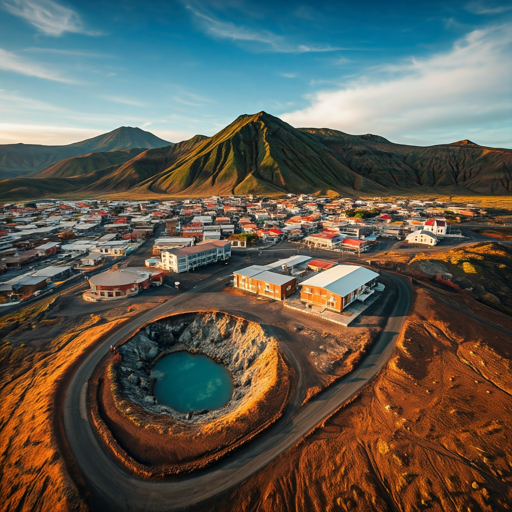
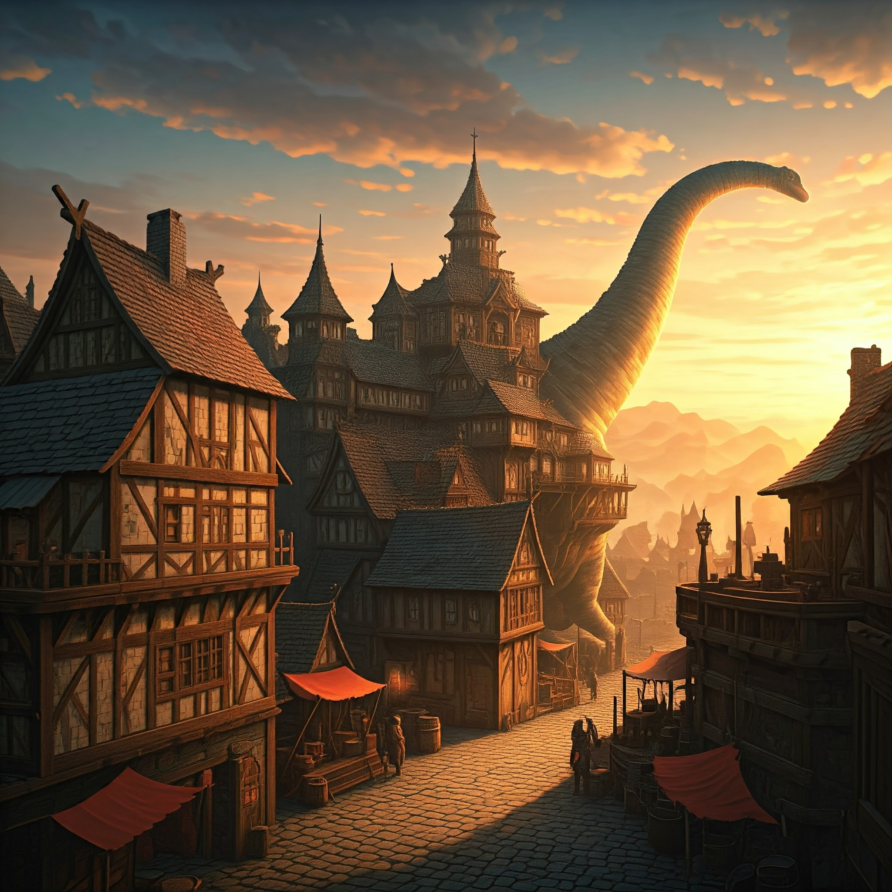

|
Ciudad Bajo el Agua
Más información
Sumérgete en un mundo submarino nunca antes visto. En la Ciudad Bajo el Agua, podrás caminar por calles sumergidas y disfrutar de una arquitectura única, todo mientras nadas junto a especies marinas exóticas. La ciudad está protegida por un gigantesco domo de cristal, permitiendo explorar los océanos sin mojarte. Además, puedes disfrutar de restaurantes con vistas panorámicas del fondo marino, realizar deportes acuáticos y descubrir la vida marina más impresionante.
- Actividades: Buceo, paseos en submarino, observación de fauna marina, cena en restaurantes submarinos.
- Mejor época para visitar: Todo el año, especialmente durante la temporada de migración de ballenas.
- ¿Sabías que? Las calles de la ciudad están iluminadas por corales bioluminiscentes.
|

|
Aldea en el Espacio
Más información
Vuela hacia el cosmos y aterriza en una aldea flotante en el espacio. Esta comunidad flotante orbita alrededor de la Tierra, y los residentes disfrutan de vistas espectaculares del planeta. Disfruta de la experiencia única de estar en un ambiente de gravedad cero mientras exploras paisajes cósmicos y galaxias cercanas. Los viajes espaciales incluyen paseos en naves futuristas y caminatas por estaciones espaciales donde podrás ver la Vía Láctea desde una perspectiva sin igual.
- Actividades: Caminatas espaciales, observación de estrellas, vuelos en nave espacial, experiencias de gravedad cero.
- Mejor época para visitar: Durante el verano, cuando las condiciones solares son más estables.
- ¿Sabías que? La aldea se desplaza por el espacio, lo que significa que siempre tendrás una vista diferente de la Tierra.
|
|

|
Aldea Volcánica
Más información
Ubicada en las entrañas de un volcán activo, esta aldea es un lugar vibrante donde la energía de la Tierra se siente en cada rincón. Experimenta el calor y la actividad geotérmica mientras exploras este paisaje único. Las viviendas están construidas con materiales resistentes a las altas temperaturas, y podrás disfrutar de un baño en aguas termales naturales. Además, las rutas de senderismo te llevan cerca de los cráteres activos, ofreciendo vistas espectaculares del magma burbujeante.
- Actividades: Senderismo volcánico, baños en aguas termales, exploración de cavernas de lava.
- Mejor época para visitar: Durante el otoño, cuando el clima es más moderado y las erupciones son más frecuentes.
- ¿Sabías que? Los residentes de la aldea viven en armonía con el volcán y utilizan la energía geotérmica para sus necesidades diarias.
|
|

|
Aldea sobre Espaldas
Más información
Imagina una aldea suspendida sobre los lomos de gigantescos brontosaurios. Estos enormes dinosaurios han sido domesticados por los habitantes de la aldea, quienes viven sobre sus espaldas mientras viajan por vastos paisajes prehistóricos. Las casas están construidas sobre plataformas móviles y seguras, adaptadas a los movimientos lentos pero firmes de estos majestuosos seres. Viaja con ellos a través de bosques primitivos, montañas y valles, mientras disfrutas de un estilo de vida único en total armonía con estos colosos de la naturaleza.
- Actividades: Paseos en los lomos de los brontosaurios, exploración de bosques prehistóricos, observación de la fauna prehistórica, visitas a zonas de descanso en las laderas de las montañas.
- Mejor época para visitar: Durante el verano, cuando las rutas a través de los valles y bosques son más accesibles y los brontosaurios están en su máximo esplendor.
- ¿Sabías que? Los brontosaurios tienen una relación especial con los habitantes, quienes los cuidan y protegen mientras viajan por su mundo prehistórico. El sonido de sus pasos puede escucharse a kilómetros de distancia.
|